Moments
Gallery
A visual journey through his life, preparation, and celebration.
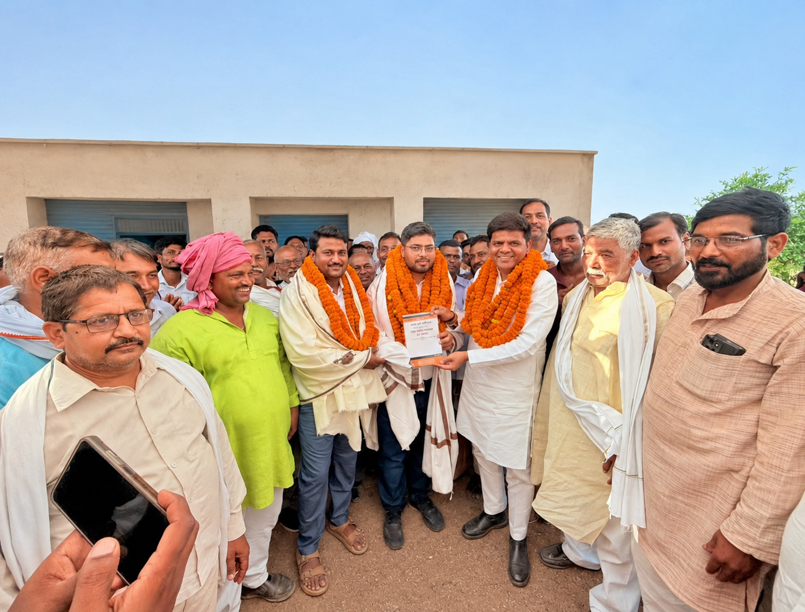
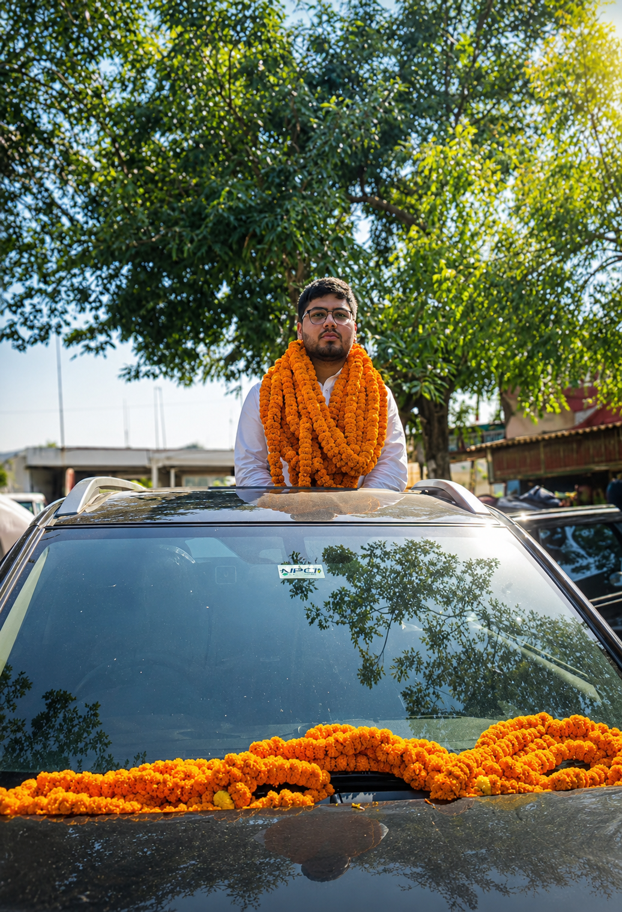
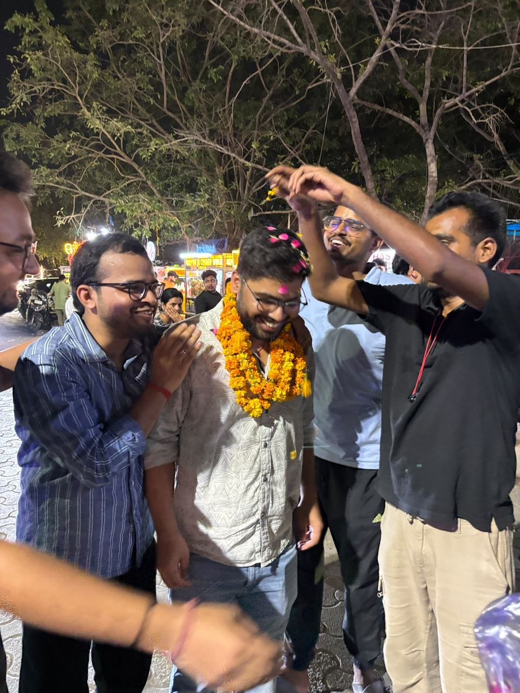
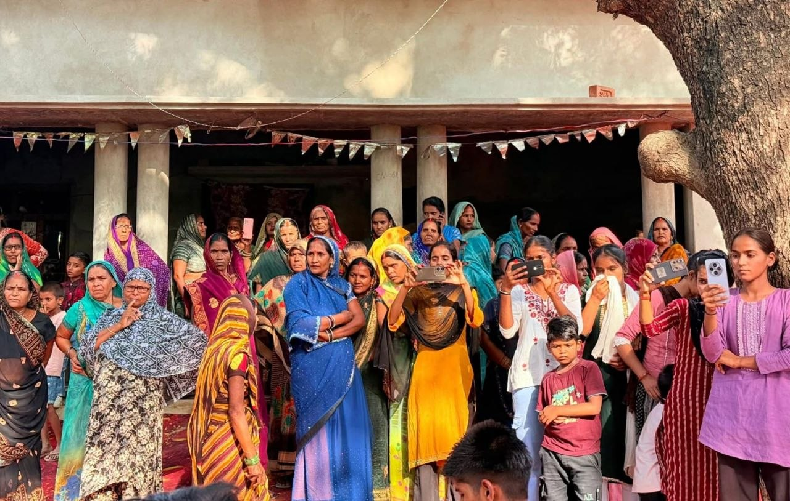
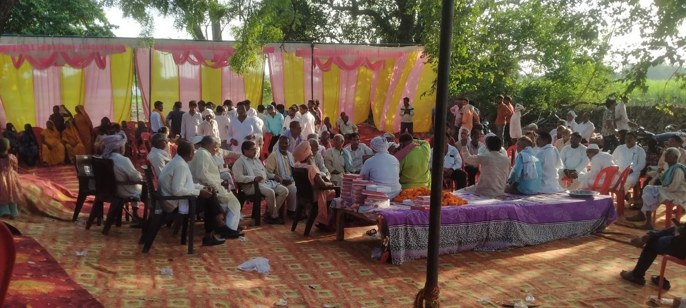

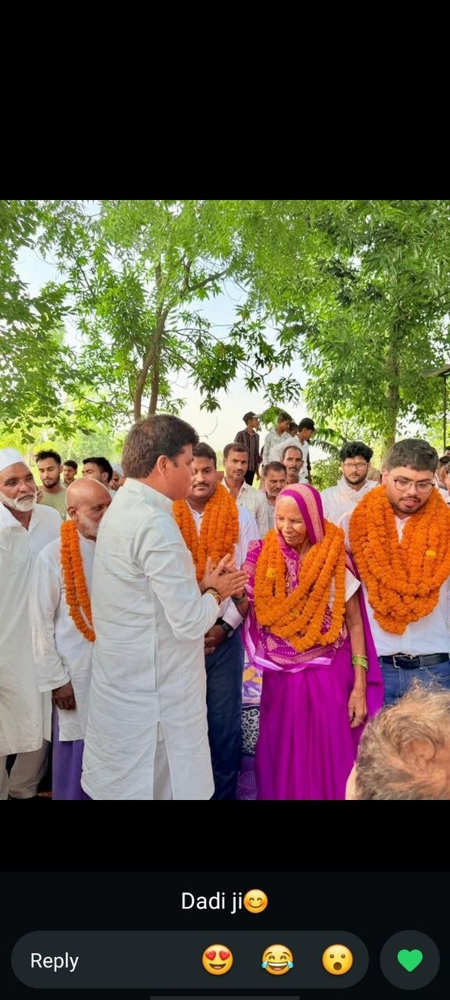
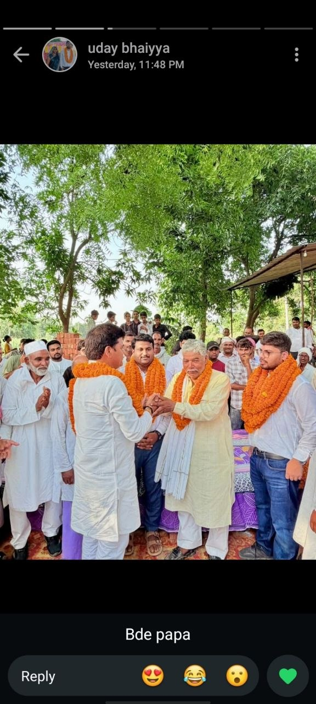
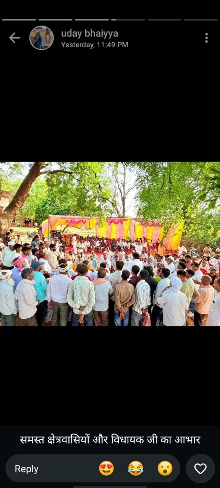
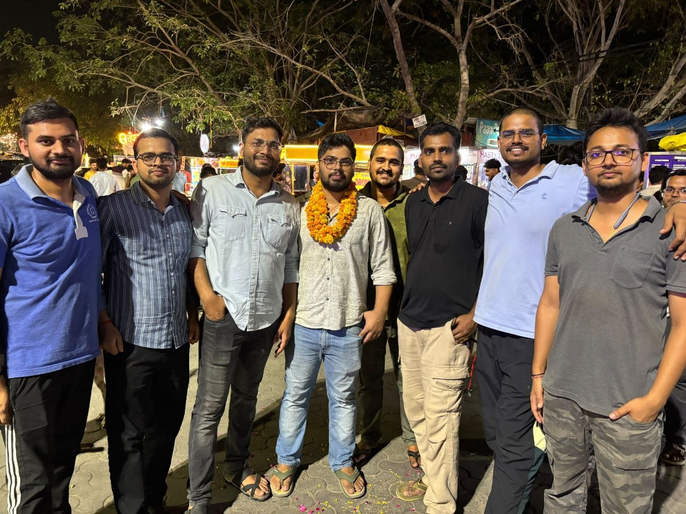
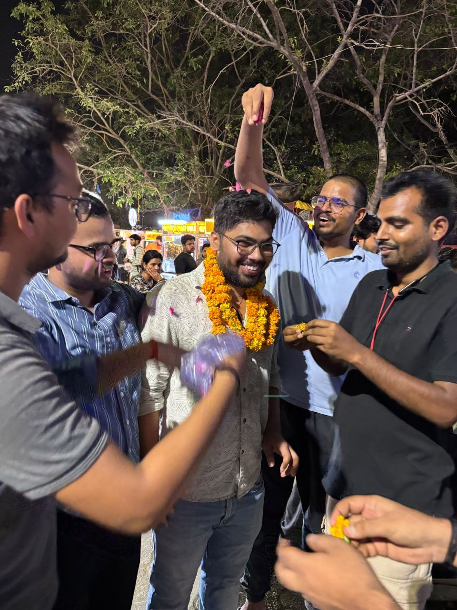
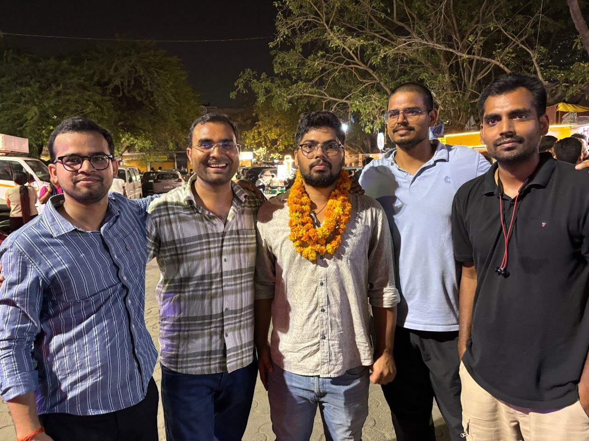
SDM — Bihar Administrative Service
"Persistence — anybody can do anything if enough hard work is put into something."
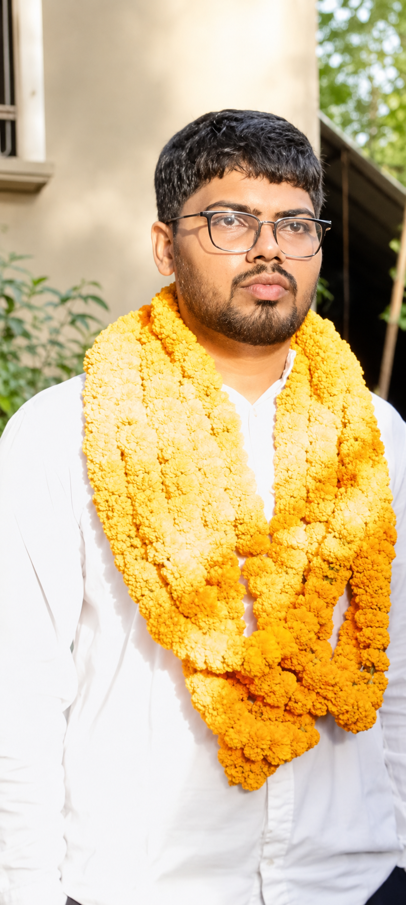
From Pargaspur Ahiroula to the Bihar Administrative Service — a story of relentless persistence.
Completed schooling from Shree Shankar Ji Inter College. Set his sights on engineering — the conventional dream.
Went to Kota for JEE preparation. The dream didn't materialize — but the resilience he found there would define everything that followed.
Pursued a Bachelor of Arts while simultaneously beginning UPSC preparation. The long, solitary grind began.
Cleared the UPSC interview cutoff but missed final selection by just 2 marks. Heartbreaking — but he didn't stop.
Cutoff was 734. He scored 732. Just 2 marks away again — anomalies found in the checking process. Yet he held his nerve.
See the anomaly report →After years of relentless effort, near-misses, and unwavering belief — he secured All India Rank 5 in the 70th BPSC. Selected as SDM in the Bihar Administrative Service.
A son of Pargaspur Ahiroula, Azamgarh — a student of history, a man who never gave up.
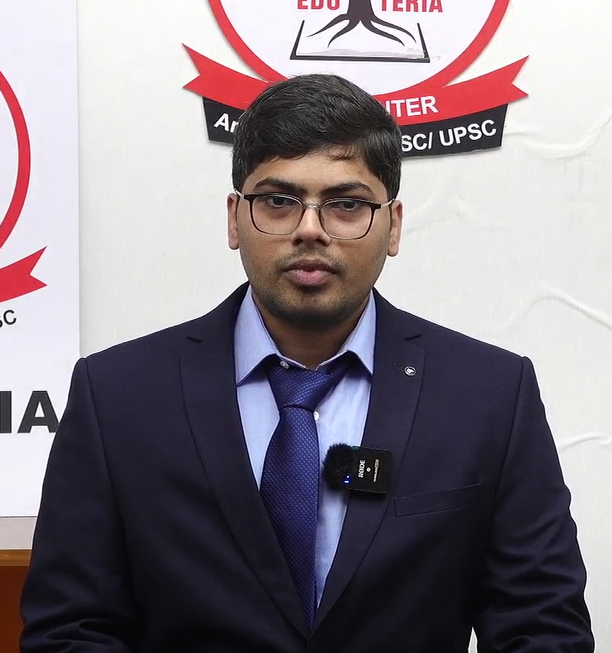
70th BPSC CCE 2026 — among the top 5 in the state.
| Rank | Name | Post |
|---|---|---|
| 1 | Shraddha Pandey | BAS |
| 2 | Shashank Gaurav | BAS |
| 3 | Ayush Vijoy | BAS |
| 4 | Parikshit Madan | BAS |
| 5 | Uday Pratap Yadav | BAS — SDM |
| 6 | Rashmi Kiran | BAS |
| 7 | Laxmikant Mishra | BAS |
| 8 | Chandrakanta Kumari | BAS |
| 9 | Upasna Sharma | BAS |
| 10 | Priya | BAS |
How he sharpened his personality and administrative thinking.
He openly acknowledged his tendency to lose temper — rare self-awareness. The panel explored stress management in administrative roles.
India-Bangladesh relations, diplomatic engagement, and regional cooperation.
Bihar Legislative Council structure, governance boards, and policy institutions.
Connected historical civilizations with contemporary governance models.
A visual journey through his life, preparation, and celebration.











His journey covered by mentors and media.
Mentora Civils — Toppers Talk
Eduteria — with Praveen Sir
Eduteria — Rank 5 Celebration
Celebration — Family Moments
What his journey teaches us.
"Persistence — anybody can do anything if enough hard work is put into something."— Uday Pratap Yadav
7 Mains, countless Prelims — he never missed a chance. Consistency is the real differentiator.
In his mock interview, he openly admitted his flaws. Honest self-assessment is a superpower.
Twice he lost by 2 marks. Each time he came back stronger. Don't let close calls break you.
He prepared with Edu Teria's mock sessions. Practice your personality as much as your knowledge.